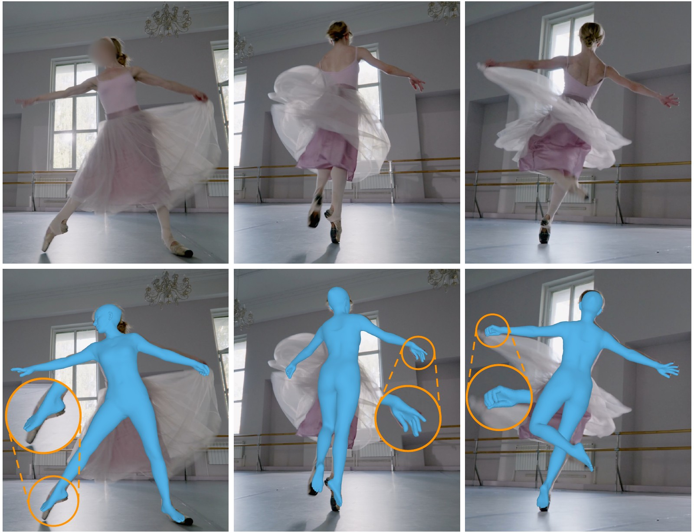
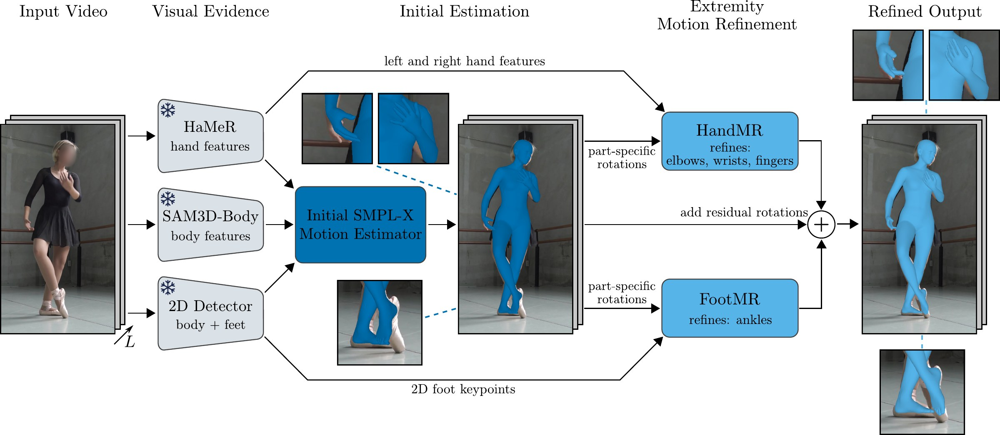
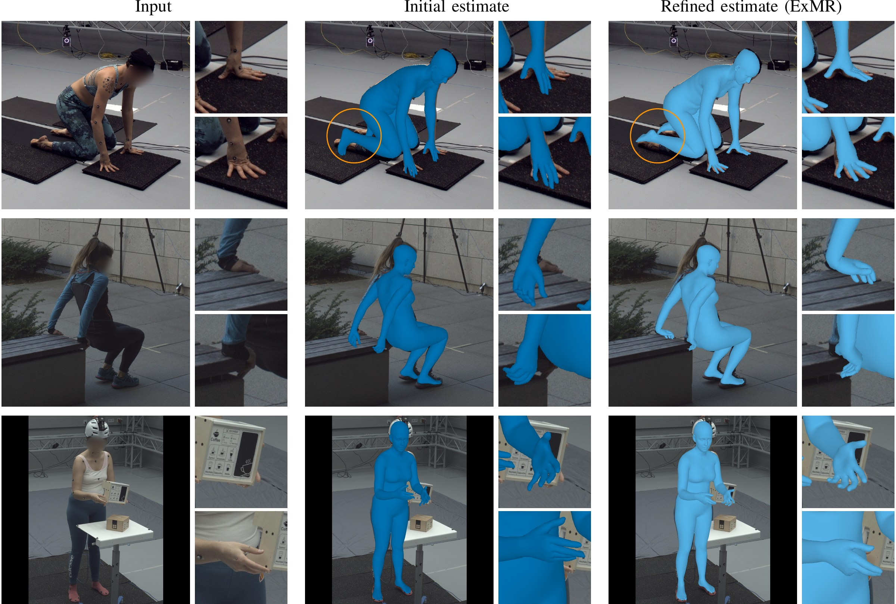
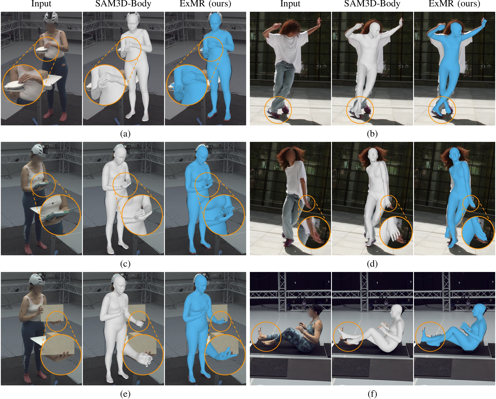

Detailed hand and foot articulation is important for animation and motion analysis, yet remains challenging to recover from monocular video. Recent expressive video methods infer hand articulation from shared whole-body representations. Our conference work suggests that this underexploits local evidence: the Foot Motion Refinement (FootMR) module refines ankle rotations from foot keypoints, improving reconstruction even when the initial estimator receives the same keypoints. We extend this principle to hands with the Hand Motion Refinement (HandMR) module. Because 2D finger keypoints are often missing or unreliable, HandMR combines image features of a pretrained hand reconstruction model with initial arm and hand rotations to refine elbows, wrists, and fingers. We integrate FootMR and HandMR into ExMR (Extremity Motion Refinement), a system for reconstructing 3D body, hand, and foot motion from monocular video. An initial temporal estimator predicts whole-body motion, after which both refiners revisit local evidence to predict residual joint rotations. Experiments on ARCTIC, MOYO, RICH, and MOOF show that ExMR outperforms state-of-the-art methods in hand and foot reconstruction, reducing hand per-vertex error and ankle joint angle error on MOYO by 19% and 18%, respectively, relative to the strongest competitor.
Try ExMR yourself in our interactive demo on Hugging Face.



@article{wehrbein2026exmr,
title = {{ExMR}: Extremity Motion Refinement for Monocular Human Motion Capture},
author = {Wehrbein, Tom and Rosenhahn, Bodo},
journal = {arXiv preprint arXiv:2610.26213},
year = {2026}
}
Please also consider citing the conference paper:
@inproceedings{wehrbein26footmr,
title = {Improving {3D} Foot Motion Reconstruction in Markerless Monocular Human Motion Capture},
author = {Wehrbein, Tom and Rosenhahn, Bodo},
booktitle = {Proceedings of the International Conference on 3D Vision (3DV)},
year = {2026},
pages = {871--881},
doi = {10.1109/3DV69130.2026.00088}
}
This work was supported by the Federal Ministry of Education and Research (BMBF), Germany, under the AI service center KISSKI (grant no. 01IS22093C), the Deutsche Forschungsgemeinschaft (DFG) under Germany's Excellence Strategy within the Cluster of Excellence PhoenixD (EXC 2122), and the European Union within the Horizon Europe research and innovation programme under grant agreement no. 101136006–XTREME.